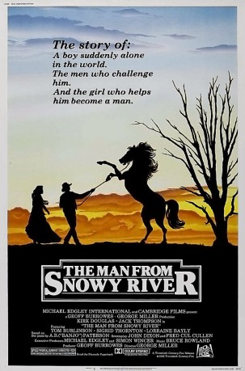

#3670 Snowy River
 
 IMDB-Wertung: 7.3 / 10
IMDB-Wertung: 7.3 / 10  Metascore: 0
Metascore: 0 
Jim Craig has lived his first 18 years in the mountains of Australia on his father's farm. The death of his father forces him to go to the low lands to earn enough money to get the farm back on its feet. Kirk Douglas plays two roles as twin brothers who haven't spoken for years, one of whom was Jim's father's best friend and the other of whom is the father of the girl he wants to marry. A 20 year old feud re-erupts, catching Jim and Jessica in the middle of it as Jim is accused of letting a prize stallion loose.
Jahr: 1982
Dauer: 93 Minuten
FSK: 6
Land: Australien Studio: Ascot Elite Home EntertainmentTonspuren:
Untertitel:
Auflösung: 1080p (1920x816) Größe: 8407 MB
Genre: Drama, Abenteuer, Familie, Western, Liebe
Regisseur: George Miller
Drehbuch: Geneon Entertainment
Soundtrack:
Darsteller:
- Tom Burlinson als Jim Craig
 Kirk Douglas als Harrison / Spur
Kirk Douglas als Harrison / Spur- Sigrid Thornton als Jessica Harrison
 Jack Thompson als Clancy
Jack Thompson als Clancy- Tony Bonner als Kane
 Chris Haywood als Curly
Chris Haywood als Curly- Heath Harris als Additional Rider
- Terence Donovan als Henry Craig
- Tommy Dysart als Mountain Man
- Bruce Kerr als Man in Street
- David Bradshaw als Banjo Paterson
- June Jago als Mrs. Bailey
- Kristopher Steele als Moss
- Gus Mercurio als Frew
- Howard Eynon als Short Man
- Lorraine Bayly als Rosemary Hume
- John Nash als Tall Man
- Jack Lovick als Mountain Horseman
- Charlie Lovick als Mountain Horseman
- John Lovick als Mountain Horseman
- Frank Hearn als Mountain Horseman
- Jack Purcell als Mountain Horseman
- Gerald Egan als Crack Rider
- Ken Connley als Crack Rider
- Mick Hulse als Crack Rider
- Max Scanlon als Crack Rider
- Peter McElroy als Crack Rider
- Dick Forrest als Crack Rider
- Chester Wallis als Crack Rider
- Brian Wallis als Crack Rider
- Peter Wallis als Crack Rider
- Bernie Wallis als Crack Rider
- Terry Walsh als Crack Rider
- Geoff Burrowes als Crack Rider
- Graeme Stoney als Crack Rider
- Lloyd Parkes als Crack Rider
- Bill Stacey als Crack Rider
- Brendan Purcell als Crack Rider
- Greg Purcell als Crack Rider
- Paul Purcell als Crack Rider
- Rob Purcell als Crack Rider
- Ron Purcell als Crack Rider
- Noel Egan als Crack Rider
- Basil Egan als Crack Rider
- Ricky Spottiswood als Crack Rider
- Bruce McCormack als Crack Rider
- John Coombes als Crack Rider
- Adrian Daniels als Crack Rider
- Gerard Comerford als Crack Rider
- Bill Willoughby als Crack Rider
Datei: X:\HD-Western-1980-1999\Snowy River (1982, FSK6, 1920x816).mkv seit 16.05.2016
Festplatte: HD Eastern+Western
 Es gibt insgesamt 29 Filme in der Gruppe 'HD-Western-1980-1999'
Es gibt insgesamt 29 Filme in der Gruppe 'HD-Western-1980-1999'